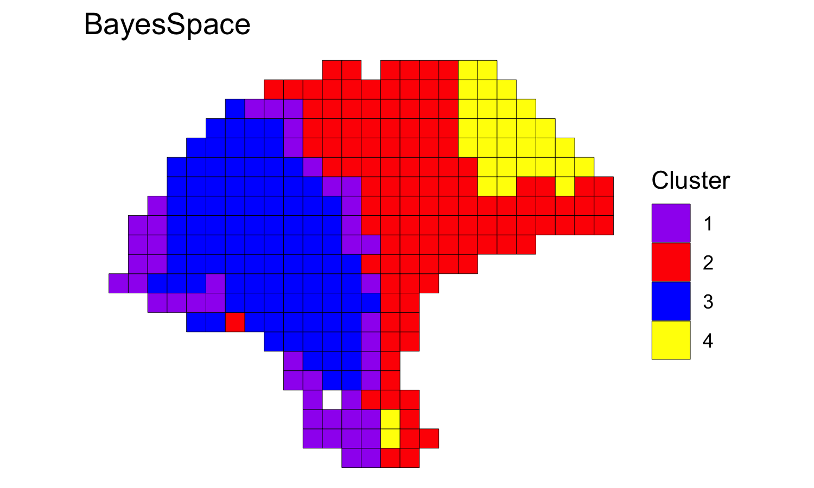

BayesSpace analysis of melanoma dataset (Thrane et al., 2018)
Edward Zhao, Matt Stone, Xing Ren, and Raphael Gottardo
Source:vignettes/thrane_melanoma.Rmd
thrane_melanoma.RmdProcessing the data
A cleaned SingleCellExperiment object containing the dataset is available through BayesSpace.
melanoma1.2 <- getRDS("2018_thrane_melanoma", "ST_mel1_rep2")
We preprocess the data by performing PCA on the top 2,000 HVGs.
set.seed(100) dec <- scran::modelGeneVar(melanoma1.2) top <- scran::getTopHVGs(dec, n = 2000) set.seed(101) melanoma1.2 <- scater::runPCA(melanoma1.2, subset_row = top)
Clustering with BayesSpace
We cluster the first seven principal components, specifying 4 clusters.
q <- 4 # Number of clusters d <- 7 # Number of PCs ## Run BayesSpace clustering set.seed(100) melanoma1.2 <- spatialCluster(melanoma1.2, q=q, d=d, platform="ST", gamma=2, nrep=1000) ## View results palette <- c("purple", "red", "blue", "yellow", "darkblue") clusterPlot(melanoma1.2, platform="ST", palette=palette) + labs(title="BayesSpace")

Comparison to other clustering algorithms
We cluster the first seven principal components, specifying 4 clusters when necessary.
Y1.2 <- reducedDim(melanoma1.2, "PCA")[, seq_len(d)]
## mclust (BayesSpace initialization)
library(mclust)
set.seed(100)
mclust.labels <- Mclust(Y1.2, q, "EEE")$classification
#> fitting ...
#>
|
| | 0%
|
|============================== | 50%
|
|===========================================================| 100%
## K-means
set.seed(103)
km.labels <- kmeans(Y1.2, centers = q)$cluster
## Louvain
set.seed(100)
g.jaccard <- scran::buildSNNGraph(melanoma1.2, use.dimred="PCA", type="jaccard", k = 25)
louvain.labels <- igraph::cluster_louvain(g.jaccard)$membership
## Giotto (pre-computed)
giotto.fname <- system.file("extdata", "thrane_HMRF_domains.csv", package = "BayesSpace")
giotto.labels <- read.csv(giotto.fname)$HMRF_PCA_k4_b.2